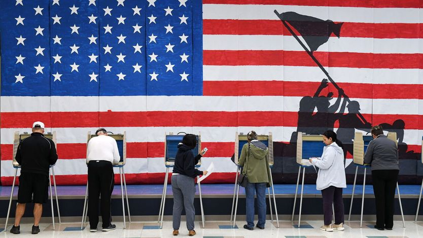

《制衡》通讯：如果美国选民都住在一栋楼里
Checks and Balance newsletter: If American voters lived under one roof
本刊执行主编约翰·普里多用一个十层公寓楼，解释一个极化的国家为何还能剧烈摇摆

- 一个看似矛盾的事实：美国选民几乎不再换党，但选举之间仍能剧烈摆动。作者用一个十层楼的思想实验，把这个矛盾一层层拆开。
- 一二层是紧跟新闻、彼此不往来的铁杆党派选民，嗓门最大；三四五层是「低信息选民」，说白了就是正常人，真正决定结果的恰恰是他们。
- 中间层的拉美裔选民被过度解读了。他们不是只关心移民的单一议题群体，只是对两党黏性更弱，因此更容易摇摆或干脆不投票。
- 六层以上在中期选举年基本不参与，二零二二年投票率只有四成七。所谓「民主命悬一线」，是一二层把自己的焦虑放大给了全国。
要理解美国政治正在发生什么，你得练一个我们称之为「菲茨杰拉德式」的动作。菲茨杰拉德在《崩溃》里写道，一流智力的标志是「能同时容纳两种相反的观念，并且仍然保持运转」。在今年这个中期选举年，美国有两种看似不可能同时成立、却同时成立的观念。
观念一：我们身处一个高度极化的时代，几乎没有选民改换阵营。观念二：一次选举到下一次选举之间，可以出现剧烈摆动。如果美国被死死分成红蓝两半，爱荷华、堪萨斯、得州的参议院选战怎么还会激烈？可它们确实激烈（尽管民调大概略微高估了民主党的支持）。
要理解这两种对立观念如何并存，不妨想象一栋十层公寓楼，里面住着美国全部选民。
进门之前先提醒一句。冒着让英国读者困惑的风险——这里是美国！一层是英国人（以及澳洲人、新西兰人、爱尔兰人）所说的底层。华盛顿的士兵没在福吉谷挨饿受冻，不是为了方便外国人在电梯里装上令人困惑的按钮。所以我们按美国惯例，从一层进。
好：一栋十层楼，装着美国全部 2.5 亿合格选民。为简化起见，也让真实感稍微让点步，就假设人住在一层。不只是门房——十分之一的选民住一层，十分之一住二层，依此类推。也别操心消防演习时怎么办，或者垃圾往哪儿扔。就把伟大的美国选民想象成整齐的十个十分之一，由一部电梯和一道楼梯连起来。
在这栋想象中的楼里，一层和二层住着一小群古怪的美国人。他们看着和别人没两样，想法却不同。他们紧跟新闻，近乎痴迷，整天争论政治。他们很少跟不同意自己的人说话，只在网上或者有线电视里碰到对方。这让他们高估了对手的极端程度。他们把自己分成了两个气味相投的群体。群体内部也有分歧，但到了选举时，他们最党派化，而且一定去投票。
楼下争吵的噪音顺着楼梯往上飘，飘到三层、四层、五层。这些人会投票，但政治参与度低。其中不少人是政治学者不客气地称为「低信息选民」、我们其他人称为正常人的那类。他们仍有党派倾向，但有些人会在选举时换边。他们注意到油价，却不太了解外交政策、税制变化或者移民执法——那些正是一二层的人天天在吵的事。自 1960 年代政治学者菲利普·康弗斯发现这一现象以来，一个令人不安的念头始终挥之不去：美国最重要的选民，恰恰是最不了解政治的人。这不是多数人想象中的民主运作方式。
关于三到五层还有一点。过去几个选举周期，关于住在这里的拉美裔选民有大量论述。2024 年有「氛围转向」之说，也有拜登政府误读了拉美裔移民观点的说法。2026 年则有许多评论说，同一批选民因为总统极端的移民政策而抛弃了他的党。这听起来像这些选民很困惑。他们并不困惑。认为拉美裔是只盯着移民政策的单一议题选民，这种看法被大大夸张了。美国的拉美裔选民只是比别的群体更不牢固地绑定在任一政党上，因此更容易摇摆，或者干脆待在家里。把康弗斯更新到 2026 年：美国政治中最重要的选民，或许是一位不太想政治、但清楚油价和菜价太贵的拉美裔男女。
那上面五层呢？在这样一个中期选举年，一二层的噪音传不了这么远。2022 年投票率 47%，2018 年 50%。值得提醒一二层那些相信美国民主每两年就命悬一线的痴迷者：这栋楼里只有一半人会在 11 月 3 日投票。到了总统大选年，六七层的住户会打开电视，选民池随之扩大。中期选举年，偶尔会有六层的人下到五层，或者反过来。但多数时候他们待在自己楼层，用「要不要去给指甲重新上漆」「要不要去户外用品店买新鱼线轮」这种方式行使生命权、自由权和追求幸福的权利，而不是选一位国会议员。
在这样一个中期选举年，所有的戏都在三到五层。换党投票的比例确实处于历史低点。但在那一小部分真会改投的人，以及党派投票率随选民在五层与六层之间流动而变化这两件事之间，人数仍然刚好够把堪萨斯变成战场。■